Adventure is on us
 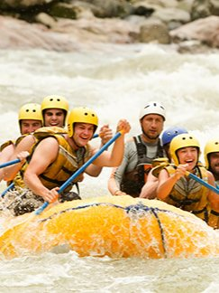
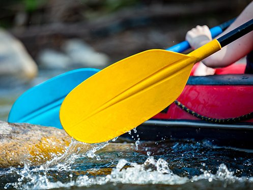
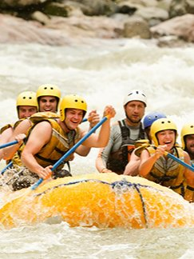
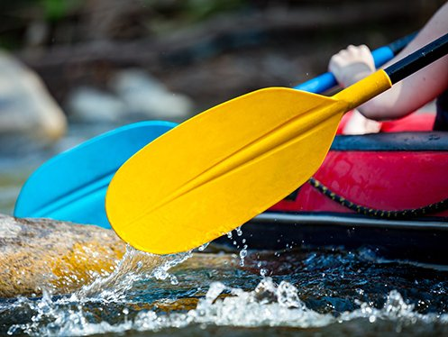
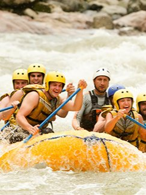
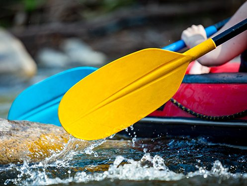
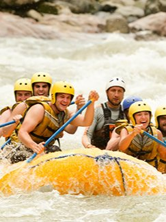
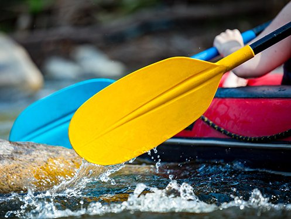
We are White Serpent White Water Rafting, a once in a lifetime sporting service. Our mission is to provide a safe, and unforgettable experience to our rafters. Our company started up right after the Olympics in the 1990s. Ever since then, we have been providing family fun and excitement to those who dare to cross the Ocoee river.
We hail from mid-state Tennessee right off the Ocoee river. Want to know how to get there? Visit our Contact Us page.
You may want to wear a swimsuit, water shoes, and sunscreen for you will get wet and be out in the sun for several hours. If you are doing the full day, lunch will be provided. Please do not bring electronics with you whilst out on the river, for you may tip and lose said electronics.
| 1/2 Day | Full day | 2 Days |
|---|---|---|
| $160 . | $280 . | $400 . |
 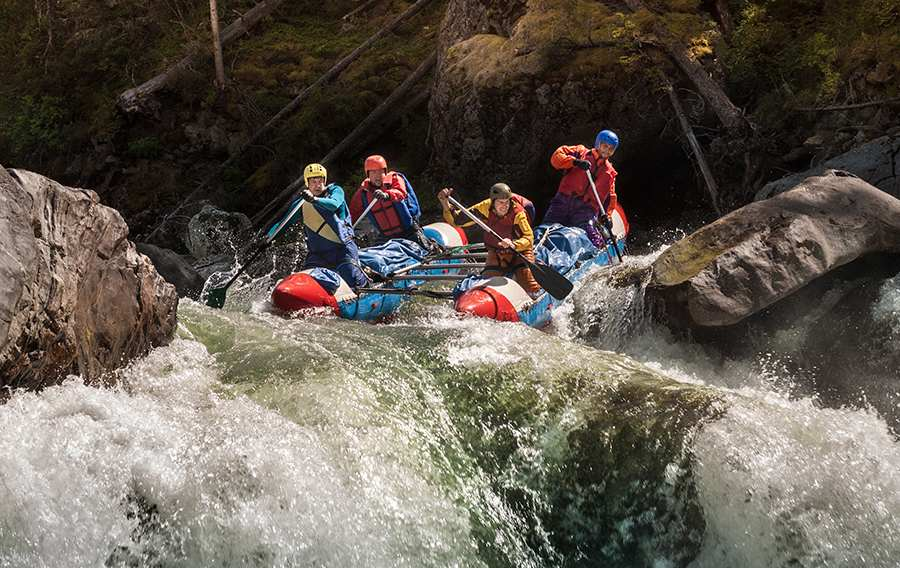
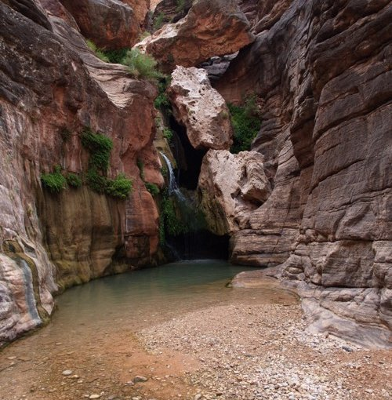
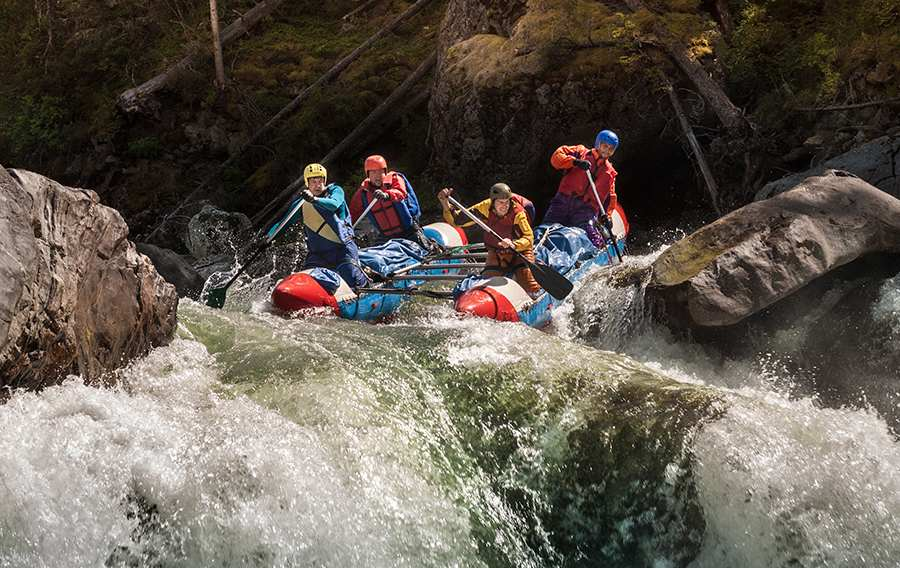
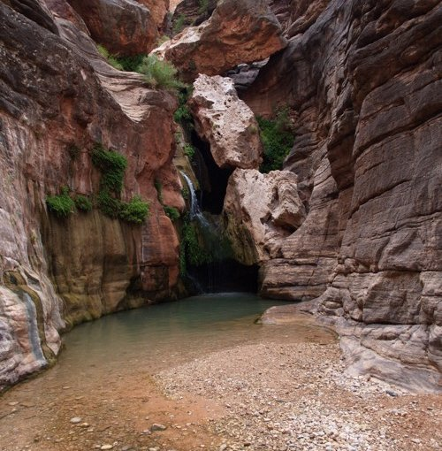